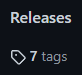
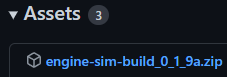
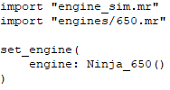
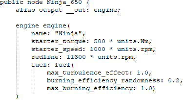

Getting Started
First off you are going to want to go to Ange Yaghi's Github
Then go to "Releases", click "Assets", then download the .zip
 
Extract the .zip literally anywhere but lets say on your Desktop.
Head into the /bin folder and open engine-sim-app.exe
Changing engines
OK so the structure of folders goes like this ~/assets/engines/
However main.mr is located in ~/assets so we dont actually need to type that out we can just say engines.

Because of that this is how your main.mr file looks like and to use a custom engine all u have to do is add your .mr file to the folder ~/assets/engines.
Then in your main.mr file u can either import this file alongside the standard kohler_ch75 with
import "engines/[name of engine file].mr"
or simply replace kohler_ch75 with the name of your engine file
So thats how u import the file then u need to find the public node of the engine u want.
This is done by opening up your .mr file of choice and finding the part that looks like this:

public node is the part u want which in this case is Ninja_650
This name u will set under
set_engine(
engine:
And thats it!